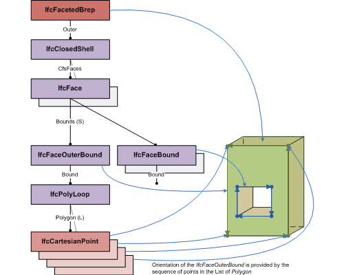

EXPRESS-G diagram
EXPRESS-G diagram| Facettierte Boundary Representation |
The IfcFacetedBrep is a manifold solid brep with the restriction that all faces are planar and bounded polygons.
|
 |
NOTE Use of IfcFacetedBrep is restricted for boundary representation models with planar surfaces only. Those surfaces are implicitly represented by the bounding polygons. The diagram shows the topological and geometric representation items that are used for faceted breps. |
|
Figure 290 — Diagram showing the use of IfcFacetedBrep |
NOTE Definition according to ISO/CD 10303-42:1992
A faceted B-rep is a simple form of boundary representation model in which all faces are planar and all edges are straight lines. Unlike the B-rep model, edges and vertices are not represented explicitly in the model but are implicitly available through the poly loop entity. A faceted B-rep has to meet the same topological constraints as the manifold solid B-rep.
The faceted B-rep has been introduced in order to support the larger number of systems that allow boundary type solid representations with planar surfaces only.
NOTE Entity adapted from manifold_solid_brep defined in ISO 10303-42.
HISTORY New entity in IFC1.0
Informal Propositions:
XSD Specification:
<xs:element name="IfcFacetedBrep" type="ifc:IfcFacetedBrep" substitutionGroup="ifc:IfcManifoldSolidBrep" nillable="true"/>EXPRESS Specification:
| ENTITY IfcFacetedBrep |
| SUPERTYPE OF(IfcFacetedBrepWithVoids) |
| SUBTYPE OF IfcManifoldSolidBrep; |
| END_ENTITY; |
Inheritance Graph:
| ENTITY IfcFacetedBrep |
| ENTITY IfcRepresentationItem |
| INVERSE |
|
| ENTITY IfcGeometricRepresentationItem |
| ENTITY IfcSolidModel |
| DERIVE |
|
| ENTITY IfcManifoldSolidBrep |
|
| ENTITY IfcFacetedBrep |
| END_ENTITY; |
Examples:
 Link to this page
Link to this page